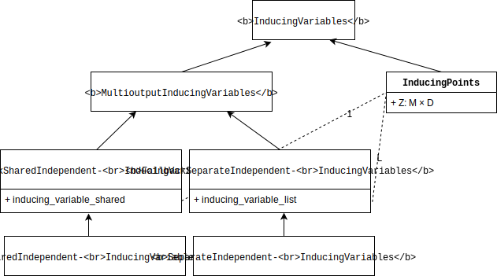

Multi-output Gaussian processes in GPflow#
This notebook shows how to construct a multi-output GP model using GPflow, together with different interdomain inducing variables which lead to different approximation properties. GPflow provides a framework for specifying multioutput GP priors, and interdomain approximations which is - modular, by providing a consistent interface for the user of the resulting SVGP model, - extensible, by allowing new interdomain variables and kernels to be specified while reusing exising code where
possible, - efficient, by allowing the most efficient custom code path to be specified where desired.
Getting to grips with the maths and code can be a bit daunting, so to accompany the documentation there is an in-depth review on arXiv, which provides a unified mathematical framework, together with a high-level description of software design choices in GPflow.
This notebook shows the various design choices that can be made, to show the reader the flexibility of the framework. This is done in the hope that an example is provided that can be easily adapted to the special case that the reader wants to implement.
A reader who just wants to use a multioutput kernel should simply choose the most efficient set of inducing variables.
To cite this framework, please reference our arXiv paper.
@article{GPflow2020multioutput,
author = {{van der Wilk}, Mark and Dutordoir, Vincent and John, ST and
Artemev, Artem and Adam, Vincent and Hensman, James},
title = {A Framework for Interdomain and Multioutput {G}aussian Processes},
year = {2020},
journal = {arXiv:2003.01115},
url = {https://arxiv.org/abs/2003.01115}
}
\begin{equation} \newcommand{\GP}{\mathcal{GP}} \newcommand{\NN}{\mathcal{N}} \newcommand{\LL}{\mathcal{L}} \newcommand{\RR}{\mathbb{R}} \newcommand{\EE}{\mathbb{E}} \newcommand{\valpha}{\boldsymbol\alpha} \newcommand{\vf}{\mathbf{f}} \newcommand{\vF}{\mathbf{F}} \newcommand{\vg}{\mathbf{g}} \newcommand{\vW}{\mathbf{W}} \newcommand{\vI}{\mathbf{I}} \newcommand{\vZ}{\mathbf{Z}} \newcommand{\vu}{\mathbf{u}} \newcommand{\vU}{\mathbf{U}} \newcommand{\vX}{\mathbf{X}} \newcommand{\vY}{\mathbf{Y}} \newcommand{\identity}{\mathbb{I}} \end{equation}
Task#
We will consider a regression problem for functions \(f: \mathbb{R}^D \rightarrow \mathbb{R}^P\). We assume that the dataset is of the form \((X, f_1), \dots, (X, f_P)\), that is, we observe all the outputs for a particular input location (for cases where there are not fully observed outputs for each input, see A simple demonstration of coregionalization).
Here we assume a model of the form: \begin{equation} f(x) = W g(x), \end{equation} where \(g(x) \in \mathbb{R}^L\), \(f(x) \in \mathbb{R}^P\) and \(W \in \mathbb{R}^{P \times L}\). We assume that the outputs of \(g\) are uncorrelated, and that by mixing them with \(W\) they become correlated. In this notebook, we show how to build this model using Sparse Variational Gaussian Process (SVGP) for \(g\), which scales well with the numbers of data points and outputs.
Here we have two options for \(g\): 1. The output dimensions of \(g\) share the same kernel. 1. Each output of \(g\) has a separate kernel.
In addition, we have two further suboptions for the inducing inputs of \(g\): 1. The instances of \(g\) share the same inducing inputs. 1. Each output of \(g\) has its own set of inducing inputs.
The notation is as follows: - \(X \in \mathbb{R}^{N \times D}\) denotes the input - \(Y \in \RR^{N \times P}\) denotes the output - \(k_{1..L}\), \(L\) are kernels on \(\RR^{N \times D}\) - \(g_{1..L}\), \(L\) are independent \(\GP\)s with \(g_l \sim \GP(0,k_l)\) - \(f_{1..P}\), \(P\) are correlated \(\GP\)s with \(\vf = \vW \vg\)
[1]:
import matplotlib.pyplot as plt
import numpy as np
import gpflow as gpf
from gpflow.ci_utils import reduce_in_tests
from gpflow.utilities import print_summary
gpf.config.set_default_float(np.float64)
gpf.config.set_default_summary_fmt("notebook")
np.random.seed(0)
%matplotlib inline
MAXITER = reduce_in_tests(2000)
2022-10-10 13:39:04.590036: I tensorflow/core/platform/cpu_feature_guard.cc:193] This TensorFlow binary is optimized with oneAPI Deep Neural Network Library (oneDNN) to use the following CPU instructions in performance-critical operations: AVX2 AVX512F FMA
To enable them in other operations, rebuild TensorFlow with the appropriate compiler flags.
2022-10-10 13:39:04.733510: W tensorflow/stream_executor/platform/default/dso_loader.cc:64] Could not load dynamic library 'libcudart.so.11.0'; dlerror: libcudart.so.11.0: cannot open shared object file: No such file or directory
2022-10-10 13:39:04.733532: I tensorflow/stream_executor/cuda/cudart_stub.cc:29] Ignore above cudart dlerror if you do not have a GPU set up on your machine.
2022-10-10 13:39:04.763774: E tensorflow/stream_executor/cuda/cuda_blas.cc:2981] Unable to register cuBLAS factory: Attempting to register factory for plugin cuBLAS when one has already been registered
2022-10-10 13:39:05.464329: W tensorflow/stream_executor/platform/default/dso_loader.cc:64] Could not load dynamic library 'libnvinfer.so.7'; dlerror: libnvinfer.so.7: cannot open shared object file: No such file or directory
2022-10-10 13:39:05.464402: W tensorflow/stream_executor/platform/default/dso_loader.cc:64] Could not load dynamic library 'libnvinfer_plugin.so.7'; dlerror: libnvinfer_plugin.so.7: cannot open shared object file: No such file or directory
2022-10-10 13:39:05.464415: W tensorflow/compiler/tf2tensorrt/utils/py_utils.cc:38] TF-TRT Warning: Cannot dlopen some TensorRT libraries. If you would like to use Nvidia GPU with TensorRT, please make sure the missing libraries mentioned above are installed properly.
/home/circleci/project/gpflow/experimental/utils.py:42: UserWarning: You're calling gpflow.experimental.check_shapes.decorator.check_shapes which is considered *experimental*. Expect: breaking changes, poor documentation, and bugs.
warn(
/home/circleci/project/gpflow/experimental/utils.py:42: UserWarning: You're calling gpflow.experimental.check_shapes.inheritance.inherit_check_shapes which is considered *experimental*. Expect: breaking changes, poor documentation, and bugs.
warn(
Generate synthetic data#
We create a utility function to generate synthetic data. We assume that:
[2]:
N = 100 # number of points
D = 1 # number of input dimensions
M = 15 # number of inducing points
L = 2 # number of latent GPs
P = 3 # number of observations = output dimensions
[3]:
def generate_data(N=100):
X = np.random.rand(N)[:, None] * 10 - 5 # Inputs = N x D
G = np.hstack((0.5 * np.sin(3 * X) + X, 3.0 * np.cos(X) - X)) # G = N x L
W = np.array([[0.5, -0.3, 1.5], [-0.4, 0.43, 0.0]]) # L x P
F = np.matmul(G, W) # N x P
Y = F + np.random.randn(*F.shape) * [0.2, 0.2, 0.2]
return X, Y
[4]:
X, Y = data = generate_data(N)
Zinit = np.linspace(-5, 5, M)[:, None]
We create a utility function for plotting:
[5]:
def plot_model(m, lower=-8.0, upper=8.0):
pX = np.linspace(lower, upper, 100)[:, None]
pY, pYv = m.predict_y(pX)
if pY.ndim == 3:
pY = pY[:, 0, :]
plt.plot(X, Y, "x")
plt.gca().set_prop_cycle(None)
plt.plot(pX, pY)
for i in range(pY.shape[1]):
top = pY[:, i] + 2.0 * pYv[:, i] ** 0.5
bot = pY[:, i] - 2.0 * pYv[:, i] ** 0.5
plt.fill_between(pX[:, 0], top, bot, alpha=0.3)
plt.xlabel("X")
plt.ylabel("f")
plt.title(f"ELBO: {m.elbo(data):.3}")
plt.plot(Z, Z * 0.0, "o")
Model the outputs of \(f(x)\) directly#
The three following examples show how to model the outputs of the model \(f(x)\) directly. Mathematically, this case is equivalent to having: \begin{equation} f(x) = I g(x), \end{equation} i.e. \(W = I\) and \(P = L\).
3. Separate independent kernel and separate independent inducing variables#
Here we allow different hyperparameters for the priors of each output. We now allow different inducing inputs for each output.
[18]:
# Create list of kernels for each output
kern_list = [
gpf.kernels.SquaredExponential() + gpf.kernels.Linear() for _ in range(P)
]
# Create multi-output kernel from kernel list
kernel = gpf.kernels.SeparateIndependent(kern_list)
# initialization of inducing input locations, one set of locations per output
Zs = [Zinit.copy() for _ in range(P)]
# initialize as list inducing inducing variables
iv_list = [gpf.inducing_variables.InducingPoints(Z) for Z in Zs]
# create multi-output inducing variables from iv_list
iv = gpf.inducing_variables.SeparateIndependentInducingVariables(iv_list)
NOTE: While the inducing points are independent, there needs to be the same number of inducing points per dimension.
[19]:
# create SVGP model as usual and optimize
m = gpf.models.SVGP(
kernel, gpf.likelihoods.Gaussian(), inducing_variable=iv, num_latent_gps=P
)
[20]:
optimize_model_with_scipy(m)
This problem is unconstrained.
RUNNING THE L-BFGS-B CODE
* * *
Machine precision = 2.220D-16
N = 460 M = 10
At X0 0 variables are exactly at the bounds
At iterate 0 f= 3.26251D+03 |proj g|= 1.79322D+03
At iterate 50 f= 1.91729D+02 |proj g|= 6.27078D+00
At iterate 100 f= 1.11226D+02 |proj g|= 1.01543D+02
At iterate 150 f= 5.20161D+01 |proj g|= 1.30689D+01
At iterate 200 f= 4.69361D+01 |proj g|= 4.69177D+01
At iterate 250 f= 4.41766D+01 |proj g|= 7.17047D+00
At iterate 300 f= 4.27943D+01 |proj g|= 9.90431D+00
At iterate 350 f= 4.12960D+01 |proj g|= 7.53606D+00
At iterate 400 f= 3.95955D+01 |proj g|= 1.22008D+01
At iterate 450 f= 3.86108D+01 |proj g|= 1.92450D+01
At iterate 500 f= 3.81436D+01 |proj g|= 1.11775D+01
At iterate 550 f= 3.79090D+01 |proj g|= 2.47366D+00
At iterate 600 f= 3.77848D+01 |proj g|= 2.24553D+00
At iterate 650 f= 3.76905D+01 |proj g|= 2.38986D+00
At iterate 700 f= 3.75869D+01 |proj g|= 4.36481D+00
At iterate 750 f= 3.74777D+01 |proj g|= 5.00007D+00
At iterate 800 f= 3.73676D+01 |proj g|= 2.15240D+00
At iterate 850 f= 3.72695D+01 |proj g|= 2.68041D+00
At iterate 900 f= 3.71963D+01 |proj g|= 1.70180D+00
At iterate 950 f= 3.71482D+01 |proj g|= 1.29328D+00
At iterate 1000 f= 3.71074D+01 |proj g|= 3.89082D+00
At iterate 1050 f= 3.70615D+01 |proj g|= 1.19608D+00
At iterate 1100 f= 3.70273D+01 |proj g|= 2.00785D+00
At iterate 1150 f= 3.69988D+01 |proj g|= 1.69787D+00
At iterate 1200 f= 3.69847D+01 |proj g|= 6.74138D-01
At iterate 1250 f= 3.69750D+01 |proj g|= 5.19511D-01
At iterate 1300 f= 3.69698D+01 |proj g|= 5.78420D-01
At iterate 1350 f= 3.69662D+01 |proj g|= 6.25408D-01
At iterate 1400 f= 3.69632D+01 |proj g|= 5.50439D-01
At iterate 1450 f= 3.69610D+01 |proj g|= 3.13294D-01
At iterate 1500 f= 3.69587D+01 |proj g|= 5.10488D-01
At iterate 1550 f= 3.69564D+01 |proj g|= 1.81866D-01
At iterate 1600 f= 3.69542D+01 |proj g|= 3.27195D-01
At iterate 1650 f= 3.69527D+01 |proj g|= 1.99318D-01
At iterate 1700 f= 3.69517D+01 |proj g|= 4.44632D-01
At iterate 1750 f= 3.69509D+01 |proj g|= 2.32143D-01
At iterate 1800 f= 3.69503D+01 |proj g|= 1.32929D-01
At iterate 1850 f= 3.69497D+01 |proj g|= 2.12914D-01
At iterate 1900 f= 3.69492D+01 |proj g|= 1.48367D-01
At iterate 1950 f= 3.69488D+01 |proj g|= 1.89027D-01
At iterate 2000 f= 3.69484D+01 |proj g|= 1.24718D-01
* * *
Tit = total number of iterations
Tnf = total number of function evaluations
Tnint = total number of segments explored during Cauchy searches
Skip = number of BFGS updates skipped
Nact = number of active bounds at final generalized Cauchy point
Projg = norm of the final projected gradient
F = final function value
* * *
N Tit Tnf Tnint Skip Nact Projg F
460 2000 2140 1 0 0 1.247D-01 3.695D+01
F = 36.948410222551317
STOP: TOTAL NO. of ITERATIONS REACHED LIMIT
[21]:
plot_model(m)

The following plot shows that we use different inducing inputs in each output dimension.
[22]:
for i in range(len(m.inducing_variable.inducing_variable_list)):
q_mu_unwhitened, q_var_unwhitened = m.predict_f(
m.inducing_variable.inducing_variable_list[i].Z
)
plt.plot(
m.inducing_variable.inducing_variable_list[i].Z.numpy(),
q_mu_unwhitened[:, i, None].numpy(),
"o",
)
plt.gca().set_xticks(np.linspace(-6, 6, 20), minor=True)
plt.gca().set_yticks(np.linspace(-9, 9, 20), minor=True)
plt.grid(which="minor")
[23]:
m.inducing_variable.inducing_variable_list
[23]:
ListWrapper([<gpflow.inducing_variables.inducing_variables.InducingPoints object at 0x7faa7c283430>, <gpflow.inducing_variables.inducing_variables.InducingPoints object at 0x7faa7c282a70>, <gpflow.inducing_variables.inducing_variables.InducingPoints object at 0x7faa7c43a260>])
Model \(f(x)\) by doing inference in the \(g\) space#
Illustration of GPflowâs multi-output capabilities#
This section shows the inheritance structure in GPflowâs multi-output framework.
Multi-output kernels (MOK) class diagram#
We include three multi-output kernels: - SharedIndependent: This kernel is included mainly as an illustration of specifying a conditional using the multiple dispatch framework. The same functionality is provided by using a normal kernel and passing in multiple approximate posteriors by stacking q_mu and q_sqrt. - SeparateIndependent: This kernel allows you to use different priors for each output GP. - LinearCoregionalization: This kernel describes the prior of the linear
model of coregionalization. As shown previously, this implementation supports various inducing point approximations.
We include several base classes. Two are noteworthy: - MultioutputKernel is included to be the base class for all multi-output kernels. - IndepedentLatent is the base class for all multi-output kernels which are constructed from independent latent processes. Including this kernel allows the specification of a default approximation method which, while not the most efficient, does take advantage of some structure. It can be applied to any kernel constructed from independent latent
processes.
There is a similarity in the meaning of SeparateIndependent and IndependentLatent. Both kernels indicate that independent processes are used, and that \(\mathbf{K}_{\bf uu}\) can therefore be represented as a [L, M, M] tensor. It could therefore be suggested that SeparateIndependent be the parent class of all âindependent latentâ kernels, instead of having a separate IndependentLatent class. We decided against this because: - this would increase the complexity in
specifying conditionals() for the otherwise simple multi-output kernels SeparateIndependent and SharedIndependent. - we did not want to specify too much of an implementation in IndependentLatent, leaving implementation details to child classes. Using SeparateIndependent as the base class would force all child classes to be a Combination kernel.
Multi-output inducing variables class diagram#

Inducing points#
The goal of this class is to provide inducing variables that can be used with any kernel, even if the method ends up being slow.
The multiouput framework extends InducingPoints to work with multi-output kernels. Just like for single-output kernels, we want InducingPoints to work for all MultioutputKernels. We do this by defining InducingPoints to take all outputs for specific inducing inputs as inducing variables.
Implemented combinations#
Multiple dispatch is applied to both Kuu(), Kuf(), and conditional(). The return values of the covariances can therefore be tailored to a specific implementation of conditional(). The following table lists combinations which are currently available in GPflow. Thanks to the multiple dispatch code, implementing your own outside of GPflow should require only a small amount of code!
Inducing variable class |
Kernel |
Kuu |
Kuf |
conditional |
note |
|---|---|---|---|---|---|
|
|
|
|
|
Works for all kernels, but might be
very inefficient. In this case
|
|
|
|
|
|
The combination of these two classes is in a sense redundant, because we can achieve the same behavior by using the single output Kernel and InducingVariable classes. They are added for illustrative purposes. Thanks to the conditional dispatch, the most efficient code path is used. |
|
|
|
|
|
We loop P times over the
|
|
|
|
|
|
We loop P times over the
|
|
|
|
|
|
We loop P times over the
|
|
|
|
|
|
Implementation which only requires
custom |
|
|
|
|
|
Implementation which only requires
custom |
|
|
|
|
|
This is the most efficient implementation for linear coregionalization. The inducing outputs live in g-space. Here we use the output of the base conditional and project the mean and covariance with the mixing matrix W. |
|
|
|
|
|
This is the most efficient implementation for linear coregionalization. The inducing outputs live in g-space. Here we use the output of the base conditional and project the mean and covariance with the mixing matrix W. |
Debugging: introspect#
Given all these possibilities it can be hard to determine which conditional will be called for which set of kernel and inducing variable. The following method lets you proactively introspect which implementation will be executed. This can be useful when debugging new code.
[28]:
def inspect_conditional(inducing_variable_type, kernel_type):
"""
Helper function returning the exact implementation called
by the multiple dispatch `conditional` given the type of
kernel and inducing variable.
:param inducing_variable_type:
Type of the inducing variable
:param kernel_type:
Type of the kernel
:return: String
Contains the name, the file and the linenumber of the
implementation.
"""
import inspect
from gpflow.conditionals import conditional
implementation = conditional.dispatch(
object, inducing_variable_type, kernel_type, object
)
info = dict(inspect.getmembers(implementation))
return info["__code__"]
# Example:
inspect_conditional(
gpf.inducing_variables.SharedIndependentInducingVariables,
gpf.kernels.SharedIndependent,
)
[28]:
<code object wrapped_function at 0x7faab4593470, file "/home/circleci/project/gpflow/experimental/check_shapes/decorator.py", line 86>
Further Reading:#
A simple demonstration of coregionalization, which details other GPflow features for multi-output prediction without fully observed outputs.